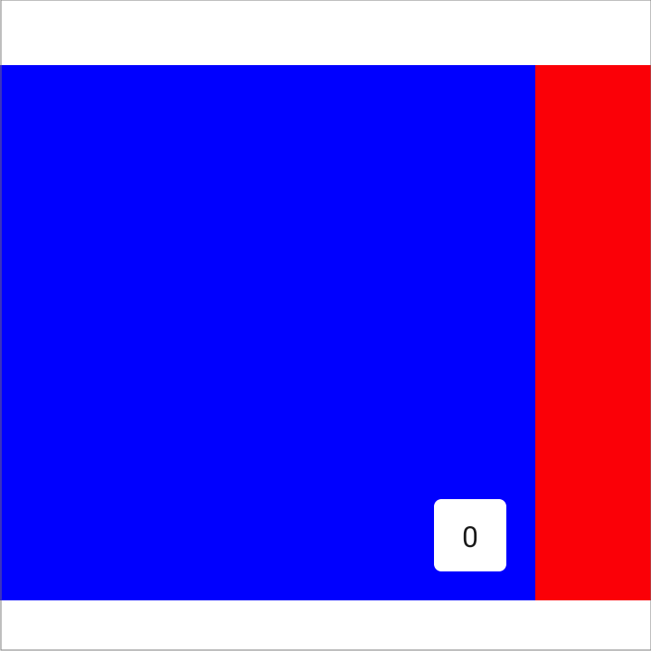

Pager layouts¶

A library which provides paging layouts for Jetpack Compose. If you've used Android's ViewPager before, it has similar properties.
Warning
The pager layouts are currently experimental and the APIs could change at any time.
All of the APIs are marked with the @ExperimentalPagerApi annotation.
HorizontalPager¶
HorizontalPager is a layout which lays out items in a horizontal row, and allows the user to horizontally swipe between pages.
The simplest usage looks like the following:
// Display 10 items
HorizontalPager(count = 10) { page ->
// Our page content
Text(
text = "Page: $page",
modifier = Modifier.fillMaxWidth()
)
}
If you want to jump to a specific page, you either call call pagerState.scrollToPage(index) or pagerState.animateScrollToPage(index) method in a CoroutineScope.
val pagerState = rememberPagerState()
HorizontalPager(count = 10, state = pagerState) { page ->
// ...page content
}
// Later, scroll to page 2
scope.launch {
pagerState.scrollToPage(2)
}
VerticalPager¶
VerticalPager is very similar to HorizontalPager but items are laid out vertically, and react to vertical swipes:
// Display 10 items
VerticalPager(count = 10) { page ->
// Our page content
Text(
text = "Page: $page",
modifier = Modifier.fillMaxWidth()
)
}
Lazy creation¶
Pages in both HorizontalPager and VerticalPager are lazily composed and laid-out as required by the layout. As the user scrolls through pages, any pages which are no longer required are removed from the content.
Under the covers, HorizontalPager use LazyRow, and VerticalPager uses LazyColumn.
Content Padding¶
HorizontalPager and VerticalPager both support the setting of content padding, which allows you to influence the maximum size and alignment of pages.
You can see how different content padding values affect a HorizontalPager below:
Setting the start padding has the effect of aligning the pages towards the end.

HorizontalPager(
count = 4,
contentPadding = PaddingValues(start = 64.dp),
) { page ->
// page content
}
Setting both the start and end padding to the same value has the effect of centering the item horizontally.

HorizontalPager(
count = 4,
contentPadding = PaddingValues(horizontal = 32.dp),
) { page ->
// page content
}
Setting the end padding has the effect of aligning the pages towards the start.

HorizontalPager(
count = 4,
contentPadding = PaddingValues(end = 64.dp),
) { page ->
// page content
}
Similar effects for VerticalPager can be achieved by setting the top and bottom values. The value 32.dp is only used
here as an example, you can set each of the padding dimensions to whatever value you wish.
Item scroll effects¶
A common use-case is to apply effects to your pager items, using the scroll position to drive those effects.
The HorizontalPagerTransitionSample demonstrates how this can be done:
The scope provided to your pager content allows apps to easily reference the currentPage and currentPageOffset. The effects can then be calculated using those values. We provide the calculateCurrentOffsetForPage() extension functions to support calculation of the 'offset' for a given page:
import com.google.accompanist.pager.calculateCurrentOffsetForPage
HorizontalPager(count = 4) { page ->
Card(
Modifier
.graphicsLayer {
// Calculate the absolute offset for the current page from the
// scroll position. We use the absolute value which allows us to mirror
// any effects for both directions
val pageOffset = calculateCurrentOffsetForPage(page).absoluteValue
// We animate the scaleX + scaleY, between 85% and 100%
lerp(
start = 0.85f,
stop = 1f,
fraction = 1f - pageOffset.coerceIn(0f, 1f)
).also { scale ->
scaleX = scale
scaleY = scale
}
// We animate the alpha, between 50% and 100%
alpha = lerp(
start = 0.5f,
stop = 1f,
fraction = 1f - pageOffset.coerceIn(0f, 1f)
)
}
) {
// Card content
}
}
Reacting to page changes¶
The PagerState.currentPage property is updated whenever the selected page changes. You can use the snapshotFlow function to observe changes in a flow:
val pagerState = rememberPagerState()
LaunchedEffect(pagerState) {
// Collect from the pager state a snapshotFlow reading the currentPage
snapshotFlow { pagerState.currentPage }.collect { page ->
AnalyticsService.sendPageSelectedEvent(page)
}
}
VerticalPager(
count = 10,
state = pagerState,
) { page ->
Text(text = "Page: $page")
}
Indicators¶
We also publish a sibling library called pager-indicators which provides some simple indicator composables for use with HorizontalPager and VerticalPager.
The HorizontalPagerWithIndicatorSample and VerticalPagerWithIndicatorSample show you how to use these.
Integration with Tabs¶
A common use-case for HorizontalPager is to be used in conjunction with a TabRow or ScrollableTabRow.
Provided in the pager-indicators library is a modifier which can be used on a tab indicator like so:
val pagerState = rememberPagerState()
TabRow(
// Our selected tab is our current page
selectedTabIndex = pagerState.currentPage,
// Override the indicator, using the provided pagerTabIndicatorOffset modifier
indicator = { tabPositions ->
TabRowDefaults.Indicator(
Modifier.pagerTabIndicatorOffset(pagerState, tabPositions)
)
}
) {
// Add tabs for all of our pages
pages.forEachIndexed { index, title ->
Tab(
text = { Text(title) },
selected = pagerState.currentPage == index,
onClick = { /* TODO */ },
)
}
}
HorizontalPager(
count = pages.size,
state = pagerState,
) { page ->
// TODO: page content
}
Changes in v0.19.0¶
In v0.19.0 both HorizontalPager and VerticalPager were re-written to be based on LazyRow and LazyColumn respectively. As part of this change, a number of feature and API changes were made:
PagerState¶
- The
pageCountparameter onrememberPagerState()has been removed, replaced with thecountparameter onHorizontalPager()andVerticalPager(). - The
animationSpec,initialVelocityandskipPagesparameters onanimateScrollToPage()have been removed. The lazy components handle this automatically.
HorizontalPager & VerticalPager¶
- Ability to set
contentPadding(see above). - Ability to specify a
keyfor each page. - The
horizontalAlignmentparameter onHorizontalPager, and theverticalAlignmentparameter onVerticalPagerhave been removed. A similar effect can be implemented with an appropriate content padding (see above). - The
infiniteLoopingparameter and feature have been removed. A sample demonstrating how to achieve this effect can be found here. - The
offscreenLimitparameter has been removed. We no longer have control of what items are laid out 'off screen'. - The
dragEnabledparameter has removed. PagerScope(the page item scope) no longer implementsBoxScope.
Usage¶
repositories {
mavenCentral()
}
dependencies {
implementation "com.google.accompanist:accompanist-pager:<version>"
// If using indicators, also depend on
implementation "com.google.accompanist:accompanist-pager-indicators:<version>"
}
Library Snapshots¶
Snapshots of the current development version of this library are available, which track the latest commit. See here for more information on how to use them.
Contributions¶
Please contribute! We will gladly review any pull requests. Make sure to read the Contributing page first though.
License¶
Copyright 2021 The Android Open Source Project
Licensed under the Apache License, Version 2.0 (the "License");
you may not use this file except in compliance with the License.
You may obtain a copy of the License at
https://www.apache.org/licenses/LICENSE-2.0
Unless required by applicable law or agreed to in writing, software
distributed under the License is distributed on an "AS IS" BASIS,
WITHOUT WARRANTIES OR CONDITIONS OF ANY KIND, either express or implied.
See the License for the specific language governing permissions and
limitations under the License.